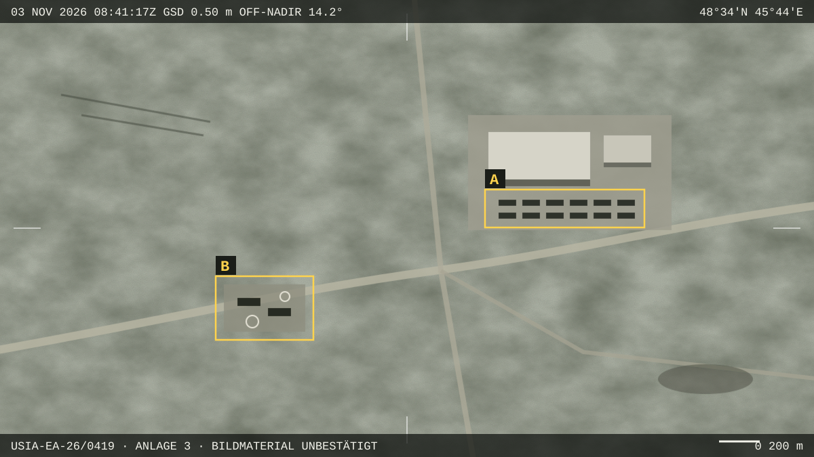

Moskau/Washington – Wie am Mittwochabend bekannt wurde, hat das russische Verteidigungsministerium auf dem Testgelände Kapustin Jar im Gebiet Astrachan ein neues System zur Erzeugung elektromagnetischer Pulse (EMP) präsentiert. Laut einer Mitteilung des Ministeriums trägt die Anlage die Bezeichnung «Sarniza-M», was sich etwa mit «Wetterleuchten» übersetzen lässt. Die Vorführung am 4. November leitete Generaloberst Arkadi Semjonow, stellvertretender Verteidigungsminister.
Nach Angaben des Ministeriums könne das System Elektronik in einem Radius von bis zu 340 Kilometern «zeitweise oder dauerhaft ausser Betrieb setzen». Gesteuert werde es von einem Rechnerverbund mit «mehr als 1 Petaflop Rechenleistung», der Zielgebiet und Pulsstärke in Echtzeit berechne. Unabhängig überprüfen lassen sich diese Angaben nicht.
Geleaktes Briefing
Für Aufsehen sorgt ein internes Briefing der Unified Strategic Intelligence Assessment (USIA), einer Analysestelle, die nach eigenen Angaben mehrere US-Nachrichtendienste berät. Das neunseitige Dokument mit der Kennung USIA-EA-26/0419 ist auf den 2. November datiert und wurde mehreren Redaktionen zugespielt. Darin heisst es, «Sarniza-M» sei «mit hoher Wahrscheinlichkeit» für einen Konflikt um die baltischen Staaten vorgesehen. Ziel sei es, die Kommunikation der NATO-Verbände in Estland, Lettland und Litauen in den ersten Stunden zu unterbrechen.
Eine Pentagon-nahe Quelle bestätigte gegenüber dem Swiss Report Forum die Echtheit des Dokuments, wollte aber namentlich nicht genannt werden. Man nehme die Einschätzung «ernst, aber nicht wörtlich», sagte die Person. Das US-Verteidigungsministerium wollte sich auf Anfrage nicht äussern.
«Wir nehmen die Einschätzung ernst, aber nicht wörtlich.»
Dem Briefing liegen Satellitenaufnahmen vom 3. November bei. Laut USIA zeigen sie zwölf Transportfahrzeuge und zwei mobile Kommandoeinheiten auf dem Gelände. Die Analysestelle schätzt, dass das System innerhalb von 72 Stunden per Bahn an die Westgrenze verlegt werden könne.

Skepsis bei Fachleuten
Dr. Jonas Achterberg, Sicherheitsforscher am Center for Security Studies der ETH Zürich, hält die genannte Reichweite für «physikalisch sehr ambitioniert». Für ein nicht-nukleares System seien 340 Kilometer weit mehr, als öffentlich bekannte Versuche bisher erreicht hätten. «Ohne unabhängige Messdaten ist das in erster Linie eine Botschaft», sagte Achterberg.
Ein elektromagnetischer Puls ist ein kurzer, sehr starker Ausbruch elektromagnetischer Energie. Er kann in Leitungen und Antennen hohe Spannungen induzieren und so ungeschützte elektronische Geräte beschädigen. Bekannt wurde der Effekt unter anderem durch den US-Atomtest «Starfish Prime» im Juli 1962, nach dem im rund 1400 Kilometer entfernten Hawaii Strassenlaternen ausfielen. Militärische Anlagen sind seither in vielen Ländern gegen solche Pulse gehärtet, zivile Infrastruktur in der Regel nicht.
Baltische Staaten zurückhaltend
Kadri Lepik, Sprecherin des estnischen Verteidigungsministeriums, sagte, man habe «keine Hinweise auf eine unmittelbare Bedrohung». Man beobachte die Lage aber «mit erhöhter Aufmerksamkeit». Litauen kündigte an, eine für Ende November geplante Übung um drei Tage vorzuziehen. Ein NATO-Sprecher in Brüssel verwies auf Anfrage auf «laufende Konsultationen».
Auch in Bern wird die Entwicklung verfolgt. Das Eidgenössische Departement für Verteidigung, Bevölkerungsschutz und Sport (VBS) teilte mit, man nehme die Berichte zur Kenntnis, sehe derzeit aber keinen Anlass für zusätzliche Massnahmen.
Ob «Sarniza-M» tatsächlich einsatzbereit ist und welche Rolle das System in der russischen Planung spielt, ist offen. Ebenso unklar ist, wer das USIA-Briefing weitergegeben hat und mit welcher Absicht.
Mit Material der Nachrichtenagenturen.
Swiss Report Forum · Fiktiver Artikel, erstellt für ein Schulprojekt zur Medienkompetenz. Personen, Dokumente, Waffensystem und die Organisation «USIA» sind erfunden.
Ich habe heute Morgen Wasser und Batterien gekauft. Mein Mann lacht mich aus. Aber 340 km, das ist von Kaliningrad aus halb Polen. Und wir sitzen hier und tun so, als ginge uns das nichts an.
Genau so funktioniert Panikmache. Ein Dokument, das niemand prüfen kann, und eine „Pentagon-nahe Quelle". Wer ist USIA überhaupt? Nie gehört.
@LuziO Und wenn es stimmt? Dann sind Sie der Erste, der fragt, warum niemand gewarnt hat.
Und die Schweiz? „Kein Anlass für Massnahmen." Unsere Armee hat nicht mal genug Munition für zwei Wochen und das VBS schläft. Unglaublich!!
Als Elektroingenieur: 340 km ohne Atombombe halte ich für Unsinn. Aber das Wort „Petaflop" klingt halt gut in einer Pressemitteilung. Die Steuerung ist nicht das Problem, die Energie ist es.
Meine Tochter ist im Austauschsemester in Vilnius. Ich habe sie heute dreimal angerufen. Sie sagt, dort redet niemand darüber. Soll ich sie zurückholen? Ich weiss nicht mehr, was ich glauben soll.
Das ist alles inszeniert, damit die Rüstungsbudgets wieder steigen. Jedes Mal das gleiche Spiel. Wacht endlich auf!
Was passiert eigentlich mit Herzschrittmachern bei so einem Puls? Mein Vater hat einen. Steht dazu irgendwo etwas? Mir wird gerade schlecht.
Ich habe „Unified Strategic Intelligence Assessment" gegoogelt. Ausser diesem Artikel finde ich nichts. Nur so als Hinweis.
Wir haben mehrere Beiträge entfernt, die zu Hamsterkäufen aufriefen oder unbelegte Behauptungen enthielten. Bitte halten Sie sich an unsere Netiquette.